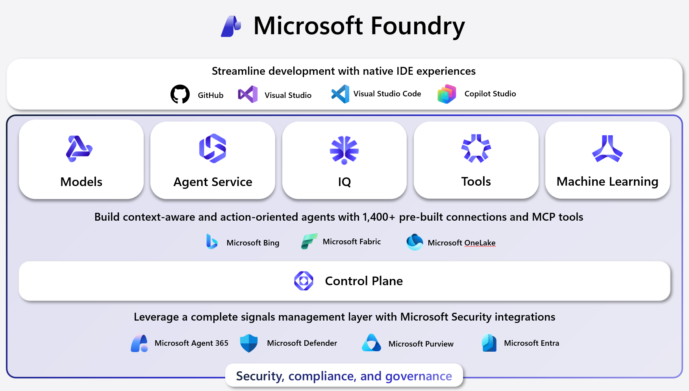
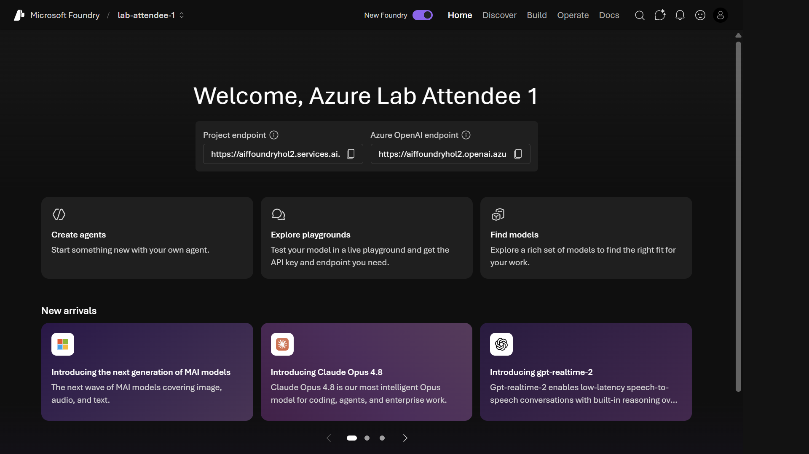
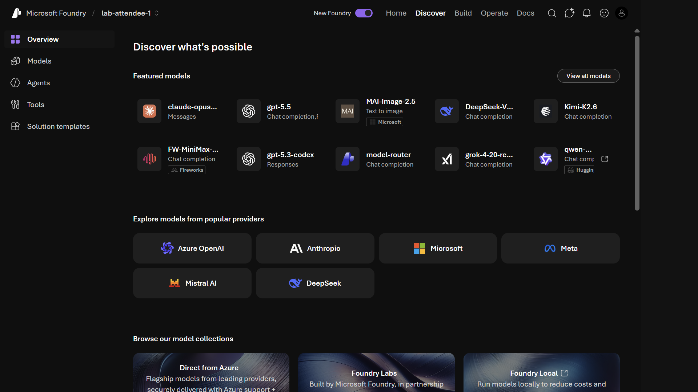
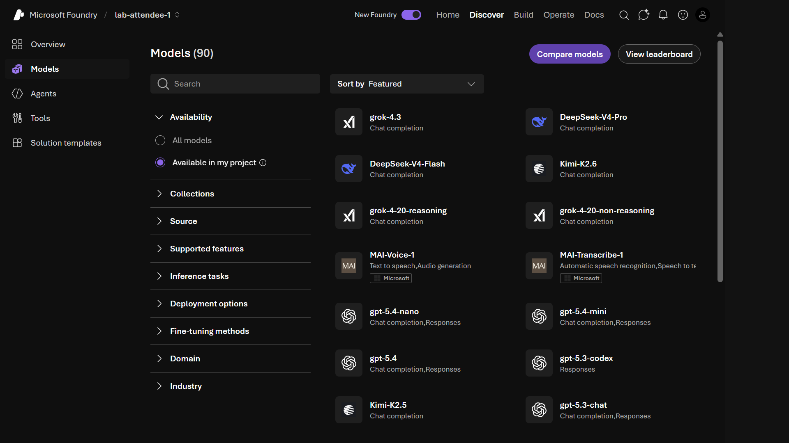
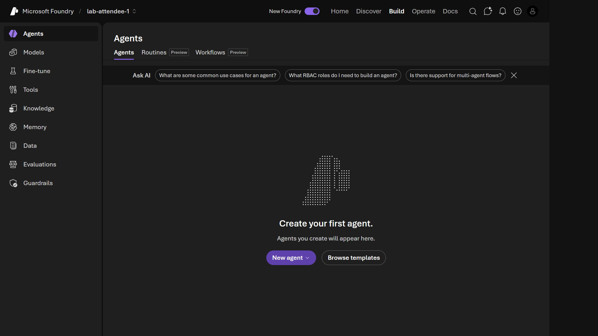
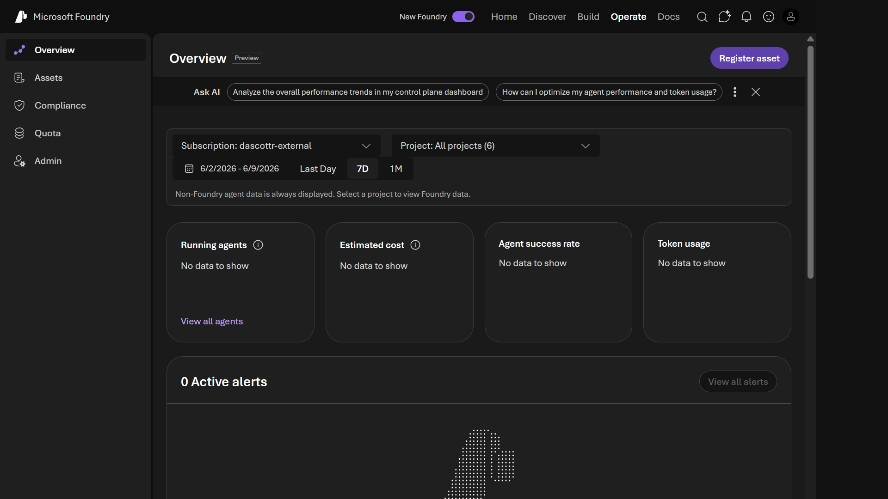

Foundry portal walkthrough
This module is delivered in the Foundry portal. Where the original steps mention a pre-provisioned shared environment, a .env file, an organizer, or a proctor, use your own Foundry project and the model you deployed in Module 01.

Microsoft Foundry is a unified Azure platform-as-a-service for enterprise AI operations, model builders, and application development. It combines production-grade infrastructure with approachable interfaces, so you can focus on building applications instead of managing the underlying infrastructure.
Foundry unifies agents, models, and tools under a single management grouping with built-in enterprise-readiness capabilities, including tracing, monitoring, evaluations, and customizable enterprise setup. It streamlines operations through unified role-based access control (RBAC), networking, and policies under one Azure resource provider namespace.
The platform gives you access to over 1,900 models from Microsoft, OpenAI, Anthropic, Mistral, xAI, Meta, DeepSeek, Hugging Face, and more. It serves application developers building AI-powered products, ML engineers and data scientists who fine-tune and evaluate models, and IT administrators who govern AI resources across teams - all from the portal you explore in this module.
Foundry brings together several core functions:
- Models - Access, deploy, and manage 1,900+ models from Microsoft and leading providers from a single project endpoint.
- Agent Service - Build context-aware, action-oriented agents with multi-agent orchestration, memory, and publishing to Microsoft 365, Teams, or containers.
- IQ - Ground agent responses in enterprise and web content with citation-backed answers (Foundry IQ), including Fabric IQ and Work IQ connectors.
- Tools - Connect over 1,400 pre-built tools and MCP servers through public and private catalogs.
The Foundry Portal
Tick the checkbox next to each step as you complete it to track your progress through this module.
The Microsoft Foundry portal at ai.azure.com is the browser-based control plane for your project. This module gives you a quick orientation across the four main tabs - Home, Discover, Build, and Operate - so you know where everything lives before you write any code.
Tip: The portal is a great place to explore and experiment. Most developers prefer to work directly in their IDE once they're comfortable, so Module 03 covers the Foundry Toolkit extension for VS Code.
Objectives
- Identify your project endpoint on the Home tab.
- Browse the model catalog on the Discover tab.
- Locate the key building surfaces on the Build tab.
- Understand what the Operate tab provides for monitoring.
Steps
1. Open the portal and select your project
- Navigate to ai.azure.com and sign in with your Azure account.
- From the project list, click on your project. If you're not sure of the name, check the
FOUNDRY_PROJECT_NAMEvalue in your.envfile (for example, lab-attendee-1).
2. Explore the Home tab
You land on the Home tab for your project.
📸 Screenshot: Microsoft Foundry portal Home tab

Look for the Project endpoint displayed prominently near the top of the page. This is the URL your code uses to talk to agents and models in this project.
Note: Your project endpoint is already saved in your
.envfile - you don't need to copy it now. It is shown here so you know where to find it if you ever need to verify or share it.
The three quick-start cards below the endpoint let you jump straight to:
| Card | What it does |
|---|---|
| Create agents | Opens the agent builder in the Build tab |
| Explore playgrounds | Opens a live chat/completion playground |
| Find models | Takes you to the model catalog |
3. Explore the Discover tab
Click Discover in the top navigation bar.
📸 Screenshot: Microsoft Foundry Discover tab

The Discover tab is the starting point for finding models, tools, and solution templates. The left sidebar has four sections:
| Section | What you'll find |
|---|---|
| Overview | Featured models, popular providers, and model collections |
| Models | The full model catalog with filters and compare |
| Agents | Pre-built agent templates you can use as a starting point |
| Tools | MCP servers and built-in tools you can attach to agents |
| Solution templates | End-to-end solution starters |
Browse the model catalog
-
Click Models in the left sidebar.
📸 Screenshot: Model catalog

-
Notice the Availability filter is set to Available in my project by default - this shows only the models already deployed and ready to use in your project.
-
Click All models to see the full catalog of 90+ models across providers (OpenAI, Anthropic, Microsoft, Meta, Mistral, DeepSeek, and more).
-
Click any model card to view its description, supported inference tasks, context window, and pricing.
-
Click Compare models (top right) to place two models side by side and compare capabilities.
You do not need to deploy any models - your workshop environment already has
gpt-4oand an embedding model ready to go.
4. Explore the Build tab
Click Build in the top navigation bar.
📸 Screenshot: Microsoft Foundry Build tab

The Build tab is where you create and configure agents and their dependencies. The left sidebar shows:
| Section | What it does |
|---|---|
| Agents | Create and manage prompt-based and hosted agents |
| Models | View deployed model endpoints for this project |
| Fine-tune | Start fine-tuning jobs on supported base models |
| Tools | Add MCP servers or built-in tools to your project |
| Knowledge | Connect Azure AI Search indexes as grounding sources |
| Memory | Configure conversation thread and memory state |
| Data | Manage datasets for fine-tuning and evaluation |
| Evaluations | Run and review agent and model evaluations |
| Guardrails | Configure content safety and policy controls |
You will use Agents, Tools, Knowledge, and Evaluations in later modules. No action is needed here now - just note the layout.
5. Explore the Operate tab
Click Operate in the top navigation bar.
📸 Screenshot: Microsoft Foundry Operate tab

The Operate tab provides observability across your projects. The Overview dashboard shows:
- Running agents - agents currently active
- Estimated cost - token and compute spend over the selected period
- Agent success rate - how often agents complete without errors
- Token usage - consumption across models and projects
The sidebar also has Assets, Compliance, Quota, and Admin for governance and capacity management. You'll return here in Module 11 (Agent Ops and Agent Identity).
Validation
- You can locate the Project endpoint on the Home tab and know that it's already in your
.envfile. - You can navigate to Discover > Models, filter by Available in my project, and identify the deployed models.
- You can find the Agents, Knowledge, and Evaluations sections on the Build tab.
- You understand that the Operate tab is where you monitor agent health and cost.
Congratulations 🎉
You toured the Microsoft Foundry portal end to end. You located your project endpoint on the Home tab, browsed the deployed models under Discover, and found the Agents, Knowledge, and Evaluations sections on the Build tab - plus the Operate tab where you monitor agent health and cost. You now know your way around the portal and where everything lives.
Next up → Module 03: Foundry Toolkit for VS Code Bring Foundry into your editor with the Foundry Toolkit and run your first model from the playground. No need to scroll - jump straight in!
Troubleshooting
- Can't see your project? Confirm the project name shown in the top breadcrumb matches the one assigned to you in Module 01. Use the breadcrumb dropdown to switch projects.
- A tab is empty or shows an error? Refresh the page and confirm your account has the Contributor role on the project. Ask your Azure administrator if the role assignment is missing.
- Project endpoint not visible on Home? Make sure the New Foundry toggle (top right) is switched on - the classic view does not show the endpoint card.